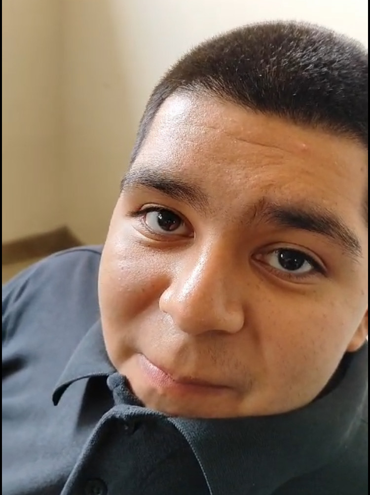

Roberto Diaz
AKA: Fortnite
Edad: 17
Rango: Gamer
Nivel de Poder: -10,000,000
Roberto, desafortunadamente, se encuentra en el último escalón de la clasificación actual en la más reciente apertura del torneo académicamente más prestigioso del 602. Ha estado ausente por un período prolongado, superando una sequía de éxitos y exhibiendo un desempeño incluso inferior al de Marcelo. Roberto ha sido aquejado por lesiones y limitaciones patológicas que lo han mantenido apartado de la competencia de mayor renombre en el CLP. Este suceso ha sumido en la desolación a los aficionados más fervientes de la serie y de su club, ya que Roberto solía ser una fuerza dominante en la clasificación, luchando por puestos de honor en la Champions League, y ahora se halla enfrascado en una batalla por evitar el descenso a la segunda división. Lamentablemente, la caída parece inevitable y Roberto está muy lejos de eludirla. Todos lamentamos su situación médica, pero confiamos en que pueda dar lo mejor de sí mismo para mantenerse en la élite en las próximas ediciones de la serie.
Roberto, una figura sobresaliente en el panorama digital del 602, se distingue por su apasionada devoción hacia el universo de los videojuegos. Es un verdadero entusiasta del FIFA, un amante fervoroso cuya dedicación al juego lo ha llevado a explorar los rincones más recónditos de la estrategia y la competencia virtual. Sin embargo, su pasión por este título ha trascendido los límites de la moderación, convirtiéndose en una adicción voraz que ha consumido incalculables cantidades de su tiempo y recursos económicos. Pero su inmersión no se detiene ahí. El embrujo hipnótico de Fortnite también ha capturado el corazón de Roberto, sumiéndolo en un torbellino de partidas interminables y compras compulsivas. Su obsesión por este juego ha cobrado un costo desalentador en su desempeño académico, ya que las calificaciones han experimentado un marcado declive y las ausencias en clase se han vuelto una constante, todo ello debido a las prolongadas sesiones de Fortnite y el exorbitante gasto en skins y otros añadidos virtuales. Esta espiral de adicción ha generado tensiones tanto dentro de su círculo familiar como entre los integrantes del grupo del 602, pues las deudas acumuladas por las desmesuradas compras en el juego han colocado una pesada carga sobre sus seres queridos. Roberto, inmerso en la vorágine de su propia adicción, ha sido la causa de su ubicación en la parte baja de la tabla de posiciones. Se debate entre la gratificación instantánea que le brindan los videojuegos y las responsabilidades que lo esperan en el mundo tangible.
Últimamente, Roberto ha atravesado una de sus temporadas más desafiantes en el campo de juego, enfrentándose a obstáculos que rivalizan con la magnitud de los el amor que Angel le tiene al Leon. Sin embargo, es en estos momentos de adversidad cuando se manifiesta la lealtad de sus seguidores más fervientes y de sus camaradas más cercanos. Aunque las sombras de la desilusión y la incertidumbre acechan, aún queda un valioso espacio temporal para que, como comunidad cohesionada, nos congreguemos para tenderle nuestra mano solidaria y ofrecerle nuestro apoyo incondicional. Recordemos con nostalgia y gratitud los días gloriosos en los que Roberto nos brindaba un espectáculo digno de las epopeyas homéricas y cada gol un himno de victoria. Su destreza y habilidad, cualidades que rayan en lo divino, nos regalaban momentos de éxtasis y nos transportaban a un reino de alegría y asombro. Es hora de rendir tributo a su legado, de honrar su arduo trabajo y dedicación incansable que, como un artesano puliendo una gema preciosa, ha forjado el brillo radiante que irradia su talento. En este crisol de solidaridad y gratitud, unamos nuestros corazones para ofrecer a Roberto el respaldo que merece, renovando así el vínculo etéreo que une al héroe con su comunidad de admiradores.
 602
602